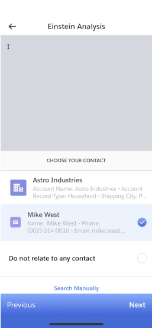

<section success="true">
    <div class="row chapter-voice mobile" ng-open="scrollToTop()">
      <div class="col-lg-12">
        <div class="row">
          <div class="slides slide-0">
            <div class="slide-image"></div>
            <div class="slide-container">
              <div class="slide-intro">
                <div class="slide-header">
                  <h1>Use voice-enabled virtual assistant.</h1>
                </div>
                <div class="slide-copy">
                  <p>
                    Let’s see how your app can make intelligent order updates based on voice commands, powered by Einstein.
                  </p>
                </div>
              </div>
              <div class="transition-copy">
                <p>
                    We can use voice commands to add notes faster and with greater ease.
                </p>
                <div class="transition-arrow"></div>
              </div>
            </div>
          </div>
          <div class="slides slide-1">
            <div class="slide-image"></div>
            <div class="phone-background"></div>
            <div class="phone-placeholder"></div>
            <div class="play-button" ng-click="startVideo()">
                
            </div>
            <div class="gif-holder hide">
                
            </div>
            <div class="transition-copy">
                <p>
                    To complete the task, Einstein will use AI and Natural Language Processing (NLP) to understand and perform the sales rep’s voice command in the context of Mike’s order data.
                </p>
                <div class="transition-arrow"></div>
              </div>
          </div>
          <div class="slides slide-2">
            <div class="slide-image"></div>
            <div class="transition-copy">
              <p>
                Einstein automatically saves updates from voice commands — all without a single click.
              </p>
              <div class="transition-arrow"></div>
            </div>
          </div>
          <div class="slides slide-3">
            <div class="slide-image"></div>
          </div>
          <div class="slides success" success="true">
            <div class="confetti-container" ng-open="renderConfetti()">
              <div class="confettii-still"></div>
              <div class="content-container">
                <div class="success-text">
                  <p>
                    Your reps can save time and check off their to-do lists faster with intelligent voice commands.
                    <br><br>
                    Want to see how Heroku can provide a seamless, connected experience for you and your customers?
                  </p>
                </div>
                <div class="mobile-success-ctas">
                  <a ui-sref="chapter-customer-app" li-autofocus="wizard.stateIndex == 11" class="btn btn-rounded">Continue</a>
                  <div class="text-link">
                    <a
                      href="https://www.salesforce.com/products/platform/solutions/ai-services/"
                      class="success-text-link"
                      target="_blank"
                      rel="noopener noreferrer"
                      >Learn more about voice</a
                    >
                    <span class="carat"><i></i></span>
                  </div>
                </div>
              </div>
            </div>
          </div>
        </div>
      </div>
    </div>
  </section>